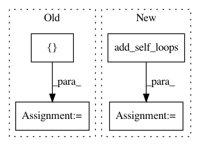

b8f8a7876bdcbb05040350b2abb3486b5337b454,torch_geometric/utils/get_laplacian.py,,get_laplacian,#Any#Any#Any#Any#Any#,9
Before Change
device=edge_index.device)
degree_index = degree_index.unsqueeze(0).repeat(2, 1)
edge_index = torch.cat([edge_index, degree_index], dim=1)
edge_weight = torch.cat([-edge_weight, deg], dim=0)
else:
if normalization == "sym":
// Compute -A_norm = -D^{-1/2}.A.D^{-1/2}
After Change
edge_weight = deg_inv_sqrt[row] * edge_weight * deg_inv_sqrt[col]
// L = I - A_norm.
edge_index, edge_weight = add_self_loops(
edge_index, -edge_weight, fill_value=1, num_nodes=num_nodes)
else:
// Compute A_norm = -D^{-1} A.
deg_inv = 1.0 / deg
deg_inv[deg_inv == float("inf")] = 0
In pattern: SUPERPATTERN
Frequency: 3
Non-data size: 4
Instances
Project Name: rusty1s/pytorch_geometric
Commit Name: b8f8a7876bdcbb05040350b2abb3486b5337b454
Time: 2019-08-04
Author: matthias.fey@tu-dortmund.de
File Name: torch_geometric/utils/get_laplacian.py
Class Name:
Method Name: get_laplacian
Project Name: rusty1s/pytorch_geometric
Commit Name: 8a8a1b4b1773abe6e40f014c0a1797609b62d134
Time: 2018-03-07
Author: matthias.fey@tu-dortmund.de
File Name: torch_geometric/nn/functional/graph_conv.py
Class Name:
Method Name: graph_conv
Project Name: rusty1s/pytorch_geometric
Commit Name: a3a05105f0a696a99f0b65384f9bed8e8702256f
Time: 2018-04-18
Author: matthias.fey@tu-dortmund.de
File Name: test/utils/test_loop.py
Class Name:
Method Name: test_add_self_loops